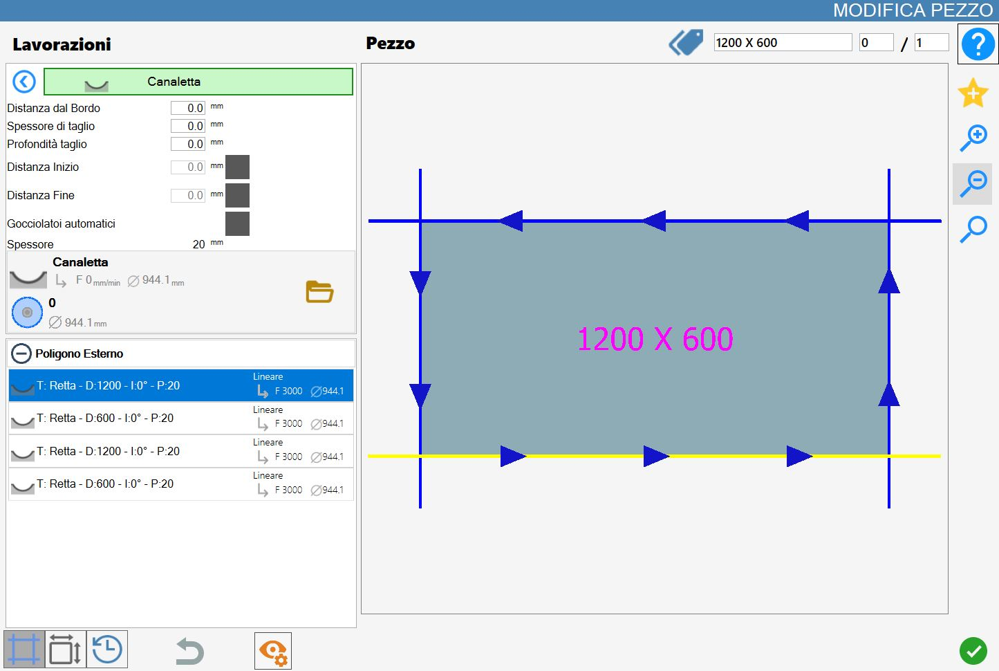
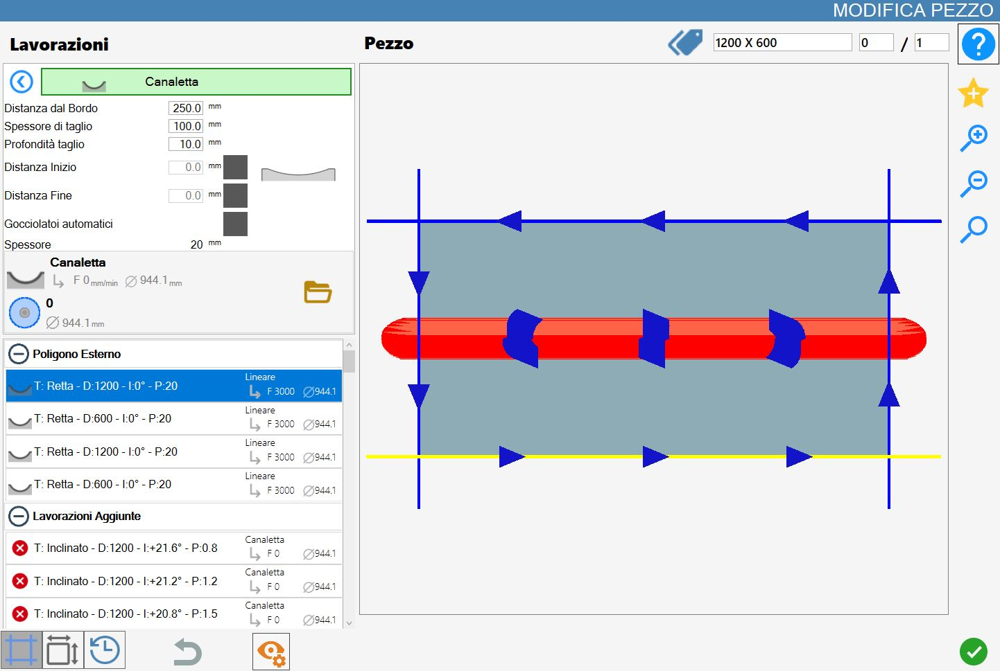

Esta función permite al operador añadir una canaleta en una zona de la pieza.
La interfaz de esta función presenta un aspecto similar a la siguiente imagen:

Parámetros
Distancia desde el borde | El operador debe introducir la distancia en mm que desea mantener respecto a uno de los bordes de la pieza. |
Espesor de corte | El operador debe introducir el espesor en mm del mecanizado de la canaleta. |
Profundidad de corte | El operador debe introducir la profundidad en mm del mecanizado de la canaleta. |
Distancia inicial | El operador puede introducir la distancia en mm desde el corte de referencia de la canaleta. |
Distancia final | El operador puede introducir la distancia en mm desde el corte de referencia de la pieza de la canaleta. |
Goterones automáticos | El operador puede decidir si se crean automáticamente goterones en la pieza después de crear la canaleta. |
Espesor | Espesor del material. |
La distancia inicial, la distancia final y el goterón automático pueden activarse o desactivarse.
Si están desactivadas, Parametrix no las tiene en cuenta; cuando están activadas, el programa calcula el desplazamiento.
Ejecución del mecanizado
Canaleta con distancia inicial y final desactivadas
La canaleta se crea a una distancia de 250mm del corte seleccionado y se extiende a lo largo de toda la pieza, con un espesor de mecanizado de 100mm y una profundidad de corte de 10mm.

Canaleta con distancia inicial activada y distancia final desactivada
La canaleta se crea a una distancia de 250mm del corte seleccionado, con un espesor de mecanizado de 100mm y una profundidad de corte de 10mm.
Con una distancia inicial de 100mm, la canaleta empieza a 100m del corte seleccionado.
/1.3-20250704-093940.png)
Canaleta con distancia inicial desactivada y distancia final activada
La canaleta se crea a una distancia de 250mm del corte seleccionado, con un espesor de mecanizado de 100mm y una profundidad de corte de 10mm.
Con una distancia final de 100mm, la canaleta termina a 100m del corte seleccionado.
/1.4-20250704-094210.png)
Canaleta con distancia inicial y final activadas
La canaleta se crea a una distancia de 250mm del corte seleccionado, con un espesor de mecanizado de 100mm y una profundidad de corte de 10mm.
Como puede verse, al haber configurado una distancia inicial de 100mm y una distancia final de 100mm, la canaleta empieza y termina a 100m del corte seleccionado.
/1.5-20250704-094051.png)
Goterón automático habilitado
El goterón se añade automáticamente; consulte el cap. 3.12.2.
Se coloca a mitad de camino entre la canaleta y el corte más cercano.
/1.6-20250704-094324.png)
Parámetros de mecanizado de la losa
El operador puede modificar los parámetros desde el panel de mecanizado de la losa.
/2.00.png)
Mecanizado con pasadas individuales
La siguiente pantalla muestra los parámetros correspondientes.
/2.01.png)
Descripción de los parámetros
/2.04.png) | Cota Z de inicio del mecanizado |
/2.05.png) | Sobrematerial |
/2.06.png) | Paso de arco |
/2.07.png) | Palpado de control |
Mecanizado con pasadas por pasos
La siguiente pantalla muestra los parámetros correspondientes.
/2.02.png)
Descripción de los parámetros
/2.03.png) | Hacia delante |